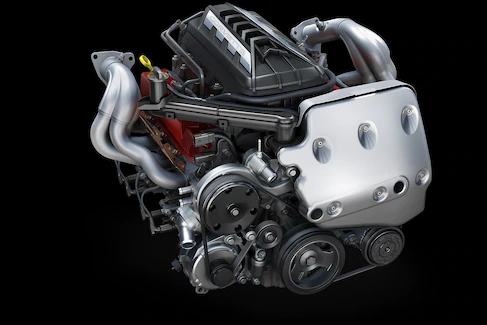

6.2L LT2 V8
A heart that's always racing
What happens when you set out to improve upon a storied legacy of small block engines? You get the all-new 6.2L LT2 V8. A no-compromises powerhouse that’s been architecturally transformed to sit lower for improved handling. It’s equipped with a standard dry-sump system for improved performance when g-forces are high, and features Continuously Variable Valve Timing that further improves performance.
HORSEPOWER : 495
TORQUE: 470lb.-ft